Опит на Оерстед
Първото експериментално доказателство за връзката между електричеството и магнетизма получава датският физик Ханс Кристиан Оерстед (1777-1851), който през 1819 г. открива магнитното действие на електричния ток. Оерстед поставя праволинеен проводник успоредно на стрелката на компас. Когато по него се пусне ток, магнитната стрелката се отклонява от направлението север-юг и застава перпендикулярно на проводника (Фиг. \ref{fig:65.1}). След прекъсване на тока стрелката се връща в началното си положение. Опитът на Оерстед показва, че електричният ток създава магнитно поле, което е подобно на полетата на постоянните магнити,
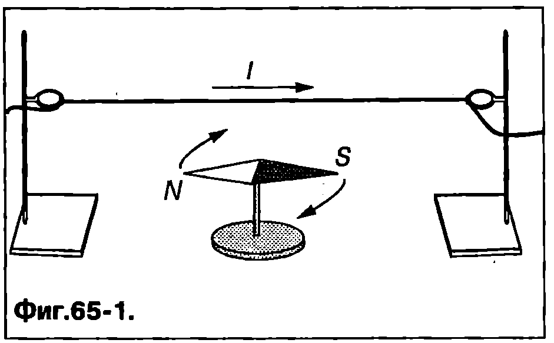
`Фиг. 65.1`
Закон на Био-Савар
След откритието на Оерстед френските физици Жан Батист Био (17741862) и Феликс Савар (1791-1841) извършват серия от експерименти и установяват връзката между индукцията на магнитното поле в дадена точка от пространството (във вакуум) и тока, който създава това поле. За да се определи магнитното поле на проводник, по който тече ток, използва се принципът на суперпозицията. Отначало ще припомним как в електростатиката с помощта на този принцип се определя електричното поле на наелектризирано тяло във вакуум. Тялото мислено се разделя на много голям (безкраен) брой малки елементи, които се разглеждат като точкови заряди $dq$. Интензитетът дена електричното поле на точков заряд $dq$ в точка $P$ (Фиг. \ref{fig:65.2}а) се определя от закона на Кулон $$dE = \frac{1}{4\pi\varepsilon_0} \frac{dq}{r^2}, $$ където $r$ е разстоянието от заряда $dq$ до точка $P$. Това уравнение се записва във векторна форма $$d\vec E = \frac{1}{4\pi\varepsilon_0} \frac{dq}{r^2} \vec r_0, $$ където $\vec r_0$ е единичен вектор, насочен от заряда $dq$ към точка $P$ (Фиг. \ref{fig:65.2}а). Съгласно с принципа на суперпозицията интензитетът на електричното поле на зареденото тяло е векторна сума от интензитетите на полетата на всички малки елементи (точкови заряди), на които то е разделено.
Аналогичен подход се използва, за да се определи индукцията на магнитното поле на проводник, по който тече ток $I$. Проводникът се разделя мислено на малки части. Всяка част се характеризира с вектор $dl$, чийто модул е равен на нейната дължина $dl$ а посоката му съвпада с посоката на тока през нея. Произведението $Idl$ се нарича токов елемент. Био и Савар установяват, че индукцията в на магнитното поле, което създава токов елемент $Idl$ в точка $P$, разположена на разстояние $r$ от него (Фиг. \ref{fig:65.2}б), се изразява с уравнението $$d\vec B = \frac{\mu_0}{4\pi} \frac{Id\vec l\times\vec r_0}{r^2}, $$ където $\vec r_0$ е единичен вектор, насочен от токовия елемент към точката $P$. Посоката на вектора $d\vec B$ съвпада с посоката на векторното произведение $d\vec l\times\vec r_0$.
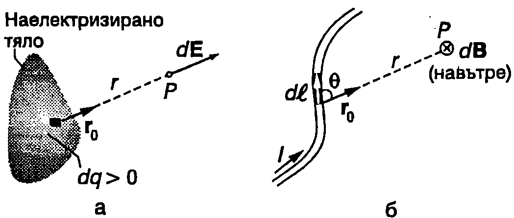
а) Елемент със заряд $dq$ създава в точка $P$ електростатично поле с интензитет $d\vec E$. 6) Токов елемент $Id\vec l$ създава в точка $P$ магнитно поле с индукция $d\vec B$. Векторът $d\vec B$ е насочен перпендикулярно на равнината на чертежа -- посоката му е от нас към чертежа.
`Фиг. 65.2`
Величината $\mu_0$ е универсална константа, наречена магнитна константа. Нейната стойност в SI е $\mu_0 = 4\pi.10^7 T.m/A = 1,!26.10^{-6}~\mathrm{T\cdot m/A}$.
Модулът (големината) на вектора $d\vec B$ е $$d B = \frac{\mu_0}{4\pi} \frac{Idl\sin\theta}{r^2}, $$ където $\theta$ е по-малкият ъгъл между векторите $dl$ и $r_0$ (Фиг. \ref{fig:65.2}б) Векторното уравнение (\eqref{eq:65.3}) и съответстващото му скаларно уравнение \eqref{eq:65.4} изразяват закона на Био-Савар. Направеното разглеждане показва, че съществува аналогия между закона на Кулон от електростатиката и закона на Био-Савар за магнитното поле. Токовите елементи, на които мислено се разделя проводник, по който тече ток, създават магнитно поле, а точковите заряди, от които е съставено наелектризирано тяло електрично поле. Индукцията на магнитното поле на токов елемент намалява обратнопропорционално на квадрата на разстоянието $r$ до елемента (уравнение \eqref{eq:65.4}), тъй както интензитетът на електричното поле на точков заряд намалява обратнопропорционално на квадрата на разстоянието $r$ до заряда (уравнение \eqref{eq:65.1}). Големината на индукцията $dB$ е правопропорционална на големината на токовия елемент (произведението на тока $I$ и дължината $dl$ на разглежданата част от проводника), $dB \propto l dl$ а интензитетът на електричното поле — на големината на точковия заряд, $dE \propto dq$.
Съгласно с принципа на суперпозицията индукцията $\vec B$ на магнитното поле в точка $P$ (Фиг. \ref{fig:65.2}б) е векторна сума (интеграл) от индукциите на полетата на всички токови елементи, на които е разделен проводникът: $$B = \frac{\mu_0}{4\pi} \int \frac{Id\vec l\times\vec r_0}{r^2}, $$ \begin{psexample}[label=ex:65.1]{Магнитно поле на праволинеен ток}{} На Фиг. \ref{fig:65.3}а е показан праволинеен проводник, по който тече постоянен ток $I$. Определете индукцията на магнитното поле в точка $P$. Дадени са ъглите $\theta_1$ и $\theta_2$ и разстоянието $a$ от точка $P$ до проводника. \end{psexample}
Решение
Избираме координатна система с ос $x$ успоредна на проводника. Точка $P$ лежи на оста $y$ (Фиг. \ref{fig:65.3}б). Разглеждаме токов елемент $I d\vec l$. Той създава магнитно поле с индукция $d\vec B$, която е насочена по посока на векторното произведение $d\vec l \times \vec r_0$, т.е. перпендикулярно на равнината $xy$ от чертежа към нас. Същата посока има магнитната индукция на всички токови елементи, на които е разделен проводникът. Следователно векторът на магнитната индукция $\vec B$ на полето в точка $P$ е насочен от чертежа към нас, а модулът му е равен на сумата (интеграл) от модулите на индукциите на полетата на всички токови елементи. В случая $|d\vec l| = dx$ (Фиг. \ref{fig:65.3}б) и уравнение \eqref{eq:65.4} за модула на вектора $d\vec B$ се записва във вида $$dB = \frac{\mu_0}{4\pi} \cdot \frac{I dx\sin \theta}{r^2}.$$
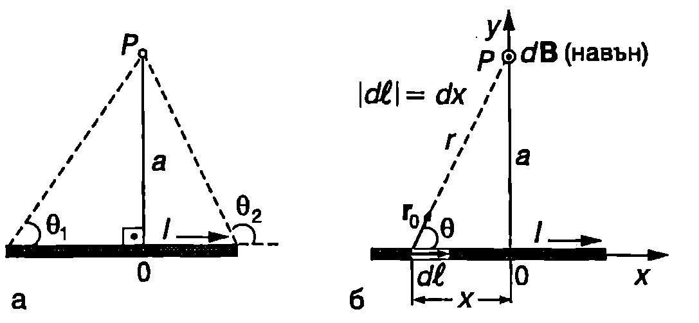
`Фиг. 65.3`
За да интегрираме това уравнение, трябва да изразим променливите $r$ и $x$ чрез променливата $\theta$. От правоъгълния триъгълник на Фиг. \ref{fig:65.3}б изразяваме разстоянието $r$ от токовия елемент до точка $P$: $$r = \frac{a}{\sin \theta}.$$ Координатата $x$ на точката, в която се намира началото на разглеждания токов елемент, е $x = -a \cot \theta$. Диференцираме двете страни на това равенство и получаваме $$dx = \frac{a}{\sin^2 \theta} d\theta.$$ Заместваме $r$ и $dx$ в уравнението за $dB$: $$dB = \frac{\mu_0 I}{4\pi a} \sin \theta d\theta.$$ Интегрираме това уравнение в граници от $\theta_1$ до $\theta_2$ (Фиг. \ref{fig:65.3}а) и определяме големината на магнитната индукция на полето, което създава токът, течащ по целия проводник: $$B = \frac{\mu_0I}{4\pi\theta} \int_{\theta_1}^{\theta_2} \sin \theta d\theta = \frac{\mu_0 I}{4 \pi a} (\cos \theta_1-\cos \theta_2 ). $$ Уравнение \eqref{eq:65.6} може да се използва за определяне магнитното поле на тока, течащ по праволинеен участък от проводник с произволна дължина. Специално внимание ще отделим на случая, когато праволинейният проводник е безкрайно дълъг. Тогава $\theta_1 = 0$, $\theta_2 = \pi$, $\cos 0 - \cos \pi = 2$ и уравнение \eqref{eq:65.6} получава вида $$B = \frac{\mu_0I}{2\pi a}. $$ Следователно магнитната индукция на полето на тока, течащ по безкраен праволинеен проводник, има постоянна големина във всички точки от пространството, намиращи се на еднакво разстояние $a$ от проводника. Индукционните линии са концентрични окръжности, лежащи в равнини, перпендикулярни на проводника. Проводникът преминава през центъра на тези окръжности. Фиг. \ref{fig:65.4} илюстрира как се прилага правилото на дясната ръка за определяне посоката на индукционните линии (на вектора $\vec B$).
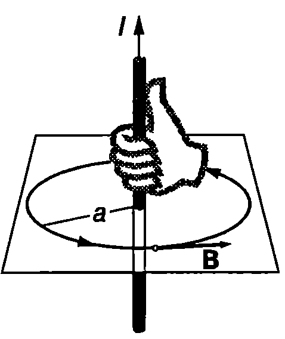
`Фиг. 65.4`
Пример 65.2
Два дълги успоредни праволинейни проводника са разположени на разстояние $a = 1~\mathrm{m}$ един от друг. По тях текат токове $I_1 = I_2 = 1~\mathrm{A}$ с еднакви посоки. Определете силата, с която първият проводник действа на участък с дължина $L = 1~\mathrm{m}$ от втория проводник. \end{psexample}
Решение
Взаимодействието между двата проводника се осъществява посредством магнитното поле. Можем да разсъждаваме по следния начин. Токът от първия проводник създава магнитно поле, чиято индукция на разстояние $a$ от него, т.е. на мястото, където се намира вторият проводник, е (вж. пример 65.1) $$B_1 = \frac{\mu_0 I_1}{2\pi a}.$$ Посоката на вектора $\vec B_1$ определяме по правилото на дясната ръка: той е насочен перпендикулярно на проводника 2 (Фиг. \ref{fig:65.5}). За всички точки от проводника 2 магнитната индукция $\vec B_1$ има еднаква големина и е перпендикулярна на проводника. Следователно на участъка с дължина $L$ от проводника 2 ще действа същата сила, както ако е поставен перпендикулярно на индукционните линии на еднородно поле с индукция $B_1$:
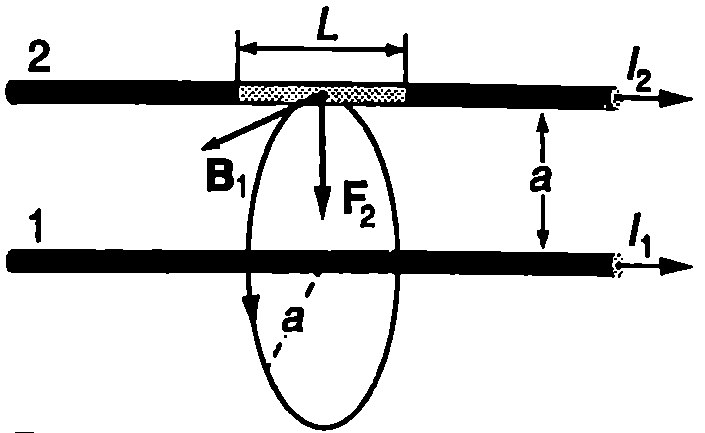
`Фиг. 65.5`
$$F_2 = B_1 I_2 L = \frac{\mu_0 I_1 I_2 L}{2\pi a}.$$
Изчисляваме числената стойност:
$$F_2 = \frac{(4\pi \times 10^{-7}\mathrm{T\cdot m/A}) (1\mathrm{A}) (1~\mathrm{A}) (1~\mathrm{m})}{2\pi (1~\mathrm{m})} = 2 \times 10^{-7}~\mathrm{N}.$$
Посоката на силата $\vec F_2$ определяме по правилото на дясната ръка: силата $\vec F_2$ е насочена към проводника 1 (Фиг. \ref{fig:65.5}). Съгласно с третия принцип на механиката двата проводника взаимодействат с равни по големина и противоположни по посока сили. В случая това са сили на привличане.
Взаимодействието между постоянните токове се използва, за да се даде определение на единицата ампер (А), която е една от основните единици в SI:
Един ампер (1 А) е постоянен ток, който при протичане по два дълги успоредни праволинейни проводника, поставени на разстояние 1 m един от друг във вакуум, създава между тях взаимодействие със сила $2.10^{- 7$ N на всеки метър дължина от проводниците.}
Магнитно поле на кръгов ток
На Фиг. \ref{fig:65.6} е показан проводник с форма на окръжност с радиус $R$, по който тече постоянен ток $I$. Ще приложим закона на Био-Савар, за да определим индукцията на магнитното поле на тока в точка $P$ от оста $z$, която е перпендикулярна на окръжността и преминава през нейния център О. Тъй като векторите $\vec r_0$ и $dl$ са взаимно перпендикулярни ($\theta = 90^\circ$) уравнение \eqref{eq:65.4} за индукцията на магнитното поле на токовия елемент $Idl$ има вида $$dB = \frac{\mu_0}{4\pi} \frac{Id l}{r^2}$$ където $r$ е разстоянието от токовия елемент до точка $P$. (Всички точки от окръжността се намират на еднакво разстояние $r$ от точка $P$.)
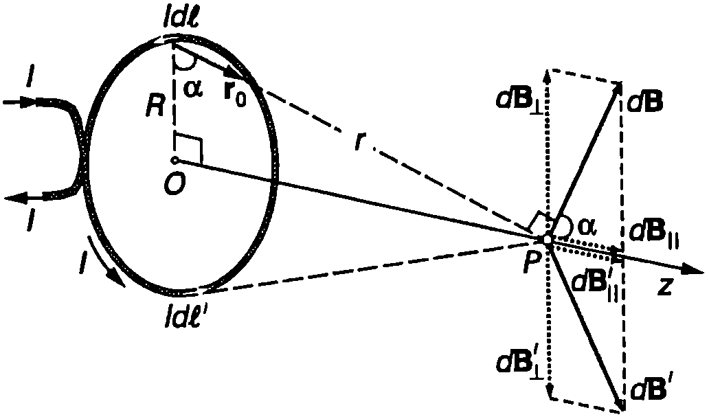
`Фиг. 65.6`
Векторът $d\vec B$ сключва ъгъл $\alpha$ с оста $z$. Той може да се разложи на две компоненти: $d\vec B_{||}$ която е успоредна на оста $z$, и $d \vec B_\perp$ -перпендикулярна на оста $z$. На всеки токов елемент $Idl$ съответства огледално си метричен спрямо центъра $O$ на окръжността токов елемент $Idl’$. Той създава в точка $P$ магнитно поле, чиято индукция $d\vec B’$ има същата големина, както $d\vec B$, и сключва същия ъгъл $\alpha$ с оста $z$. Компонентите $d\vec B_{\perp}$ и $d \vec B_{\perp}’$ имат еднакви големини и противоположни посоки, поради което взаимно се компенсират. Затова индукцията $\vec B$ на магнитното поле на кръговия ток в точка $P$ е насочена по оста $z$. Големината на $\vec B$ e равна на сумата (интеграл) от големините $d B_{||} = dB\cos\alpha$ на успоредните на оста $z$ компоненти на магнитните полета на всички токови елементи, на които е разделен кръговият ток: $$B= \oint dB \cos \alpha.$$ От правоъгълния триъгълник на Фиг. \ref{fig:65.6} изразяваме $\cos\alpha = R/r$. (Двата ъгъла, означени на чертежа с $\alpha$, са равни, тъй като са ъгли с взаимно перпендикулярни рамена.) Заместваме $dB$ и $\cos\alpha$ и пресмятаме интеграла $$B= \frac{\mu_0 IR}{4\pi r^3} \oint dl = \frac{\mu_0IR}{4\pi r^3} (2\pi R) = \frac{\mu_0I R^2}{2r^3}. $$
Индукцията на магнитното поле в центъра $O$ на окръжността (при $r = R$) е $$B_O = \frac{\mu_0I}{2R}. $$
Посоката на вектора $\vec B$ съвпада с посоката на магнитния момент $\vec p_m$ на кръговия ток (Фиг. \ref{fig:65.7}). След като отчетем, че $p_m = IS = I\pi R^2$ (вж. 564), записваме уравнение (\eqref{eq:65.8}) във векторна форма:
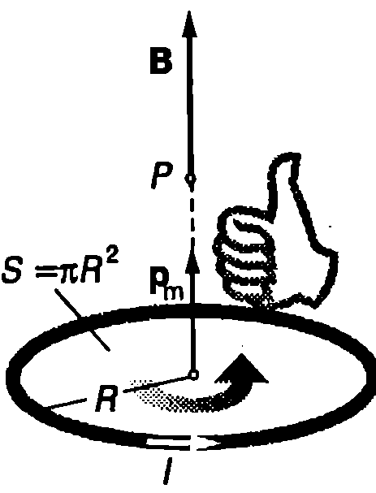
`Фиг. 65.7`
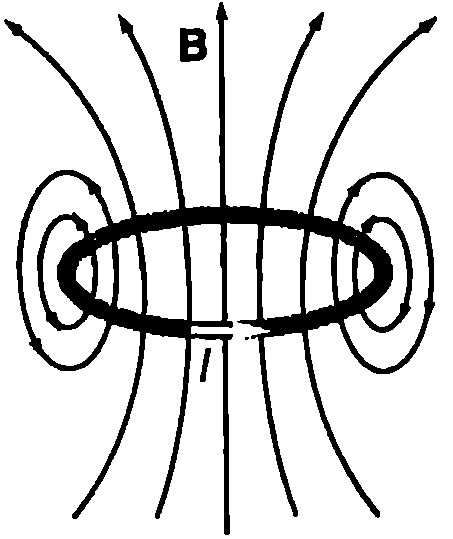
`Фиг. 65.8`
$$\vec B = \frac{\mu_0\vec p_m}{2\pi r^3}. $$ Следователно индукцията на магнитното поле на кръговия ток намалява обратнопропорционално на куба на разстоянието $r$ до проводника ($B \propto 1/r^3$). По подобен начин се изменя полето на електричен дипол: $E \propto 1/(r^3)$ (вж. 50). Индукционните линии на полето на кръгов ток са показани на Фиг. \ref{fig:65.8}. Те са подобни на силовите линии на електричното поле на електричния дипол (Фиг. \ref{fig:50.2} на стр.35). Освен това магнитното поле на кръговия ток е подобно на полето на къс прав магнит (вж. Фиг. \ref{fig:62.1} на стр.80). Магнитната стрелка и късият прав магнит, които имат два противоположни магнитни полюса (северен $N$ и южен $S$), разположени близо един до друг, са примери за магнитни диполи. Кръговият ток също е магнитен дипол, защото има следните свойства:
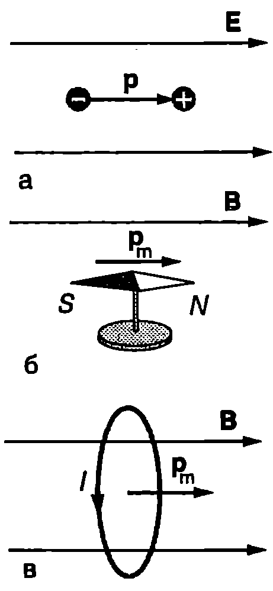
а) Електричните сили ориентират електричния дипол по посока на електричното поле. По подобен начин магнитните сили ориентират по посока на магнитното поле магнитните диполи: 6) магнитна стрелка; в) проводник, по който тече кръгов ток.
`Фиг. 65.9`
-
Създава поле на магнитен дипол.
-
В магнитно поле под действие на въртящия момент на магнитните сили се ориентира така, че магнитният му момент $p_m$ да е насочен по посока на индукцията на външното магнитно поле (Фиг. \ref{fig:65.9}в). Както ще видим в 968, кръгови токове текат в атомите. Тези токове определят магнитните свойства на веществата.
Закон на Ампер
В електростатиката установихме (вж.~\ref{sec:46}, стр.19), че циркулацията на електростатичното поле по произволен затворен контур $L$ e равна на нула: $\oint_L \vec E \cdot d\vec l = 0$. Френският физик Андре Мари Ампер (17751836) пръв установява връзката между циркулацията на постоянното магнитно поле и токовете, които създават това поле. Законът на Ампер гласи:
Циркулацията по произволен затворен контур $L$ (амперов контур) на индукцията $\vec B$ на постоянното магнитно поле във вакуум е равна на произведението на магнитната константа $\mu_0$ и пълния ток $I$ пресичащ произволна повърхност $S$, ограничена от контура $L$: $$\oint \vec B \cdot d\vec l = \mu_0I. $$
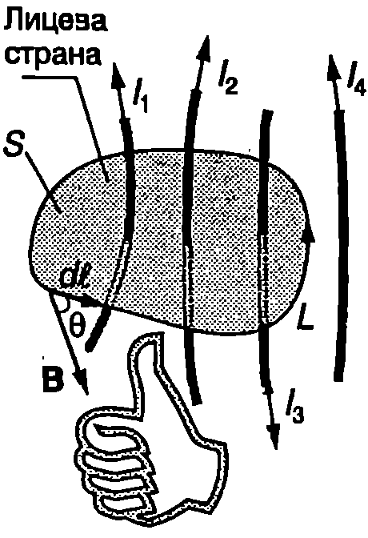
`Фиг. 65.10`
Фиг. \ref{fig:65.10} показва как се прилага законът на Ампер. Отначало се избира амперовият контур 1 и повърхност $S$, ограничена от този контур. Избира се посока на обикаляне на контура, т.е. посока на елементарните вектори $d\vec l$. По правилото на дясната ръка се определя коя е лицевата страна на повърхността $S$: свитите пръсти сочат посоката на обикаляне на контура, а опънатия палец е насочен от опаката към лицевата страна на $S$. След това се пресмятат скаларните произведения $\vec B.d\vec l = Bdl\cos\theta$ и се сумират (пресмята се интегралът в уравнение \eqref{eq:65.11}). Токовете, които пресичат повърхността $S$ от опаката към лицевата страна, се вземат със знак плюс, а токовете, насочени от лицевата към опаката страна на $S$ — със знак минус. В случая $I = I_1 + I_2 - I_3$. Ще обърнем внимание, че магнитното поле на тока $I_4$ не дава принос към циркулацията по контура $L$, защото токът не пресича повърхността $S$.
Решаването на интеграла в уравнение \eqref{eq:65.11} в повечето случаи може да стане само числено. Когато обаче магнитното поле има определен вид симетрия, задачата съществено се опростява и с помощта на закона на Ампер лесно се определя неговата индукция.
\begin{psexample}[label=ex:65.3]{Магнитно поле на соленоид}{} По цилиндрична намотка (соленоид) тече постоянен ток $I$ (Фиг. \ref{fig:65.11}). Определете индукцията на магнитното поле вътре в намотката. Дължината на намотката е $l$, а броят на навивките й е $N$. Дължината на намотката е много по-голяма от диаметъра на напречното и сечение. \end{psexample}
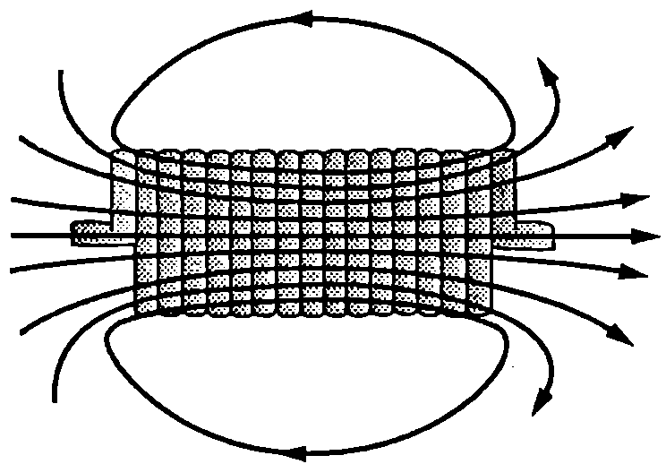
`Фиг. 65.11`
Решение
Когато броят на навивките е голям и те са разположени плътно една до друга, магнитното поле вътре в соленоида е силно и приблизително еднородно. Полето извън соленоида е много по-слабо и може да не се отчита. Затова ще смятаме, че в соленоида полето в еднородно, а извън него е равно на нула. Колкото по-дълъг е соленоидът и колкото по-плътно са разположени намотките му, толкова по-точно се изпълнява това условие. Напречно сечение на такъв соленоид е показано на Фиг. \ref{fig:65.12}. За да определим индукцията $B$ на еднородното магнитно поле в соленоида, ще използваме закона на Ампер. Избираме амперов контур с форма на квадрат със страна а (Фиг. \ref{fig:65.12}). Частите от квадрата, които са извън соленоида, нямат принос в циркулацията, защото там $\vec B = 0$. Част от страните 2 и 4 на квадрата са
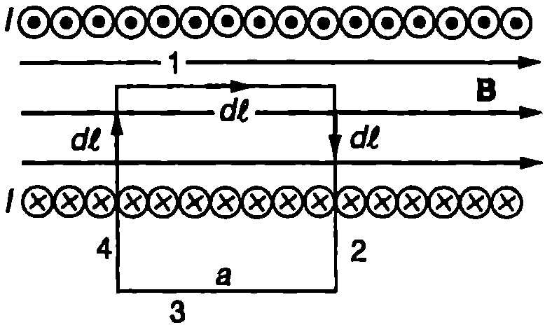
`Фиг. 65.12`
разположени вътре в соленоида, но те също нямат принос в циркулацията, тъй като за тях векторите $\vec B$ и $d\vec l$ за взаимно перпендикулярни и скаларното им произведение е нула: $\vec B.d\vec l = 0$. Циркулацията се определя само от страната 1, където векторите $\vec B$ и $d\vec l$ са успоредни: $\vec B.d\vec l = Bdl$. Следователно $$\oint_\text{квадрат} \vec B.d\vec l = \int_\text{страна 1} \vec B.d\vec l = B\int_\text{страна 1} dl = Ba$$ Броят на навивките, пресичащи квадрата, $\displaystyle \frac{N}{l} a$, където отношението $\displaystyle \frac{N}{l}$ е равно на броя на навивките на единица дължина от соленоида (плътност на навивките). По всяка навивка тече ток $I$ и тези токове пресичат повърхността, ограничена от контура (квадрата), от лицевата към опаката страна. Затова общият ток през тази повърхност е $\displaystyle \frac{N}{l} aI$ От закона на Ампер следва равенството $$Ba = \mu_0 \frac{N}{l} aI,$$ откъдето определяме индукцията на магнитното поле в соленоида $$B = \mu_0\frac{N}{l}I. $$ Следователно индукцията на магнитното поле в дълъг соленоид е правопропорционална на тока $I$, който тече по соленоида, и на плътността на неговите навивки $\displaystyle \frac{N}{l}$.
Задачи
-
Когато по дълго праволинейно нервно влакно преминава токов импулс, на разстояние $1~\mathrm{mm}$ от влакното е измерено магнитно поле с индукция $1.10^{-10} ~\mathrm{T}$. Колко ампера е токът през влакното?
а) По кръгов проводник с радиус $R = 1~\mathrm{cm}$ тече ток $I = 10~\mathrm{A}$. Пресметнете индукцията на магнитното поле на тока в центъра на кръга.
б) Съгласно с модела на Бор електронът в атома на водорода обикаля около протона със скорост $v = 2.2 \times 10^6~\mathrm{m/s}$ по кръгова орбита с радиус $r = 5.3 \times 10^{-11}~\mathrm{m}$. Определете индукцията на магнитното поле на електрона в центъра на орбитата.
-
По соленоид, който има по $100$ навивки на $1~\mathrm{cm}$ дължина, тече ток $10~\mathrm{A}$. Пресметнете индукцията на магнитното поле в соленоида.
-
В соленоид с по $200$ навивки на $1~\mathrm{cm}$ дължина е поставен втори соленоид с по-малък диаметър, който има $100$ навивки на $1~\mathrm{cm}$ дължина. Осите на двата соленоида съвпадат. По двата соленоида тече ток $10~\mathrm{A}$. Определете индукцията на магнитното поле в малкия соленоид, ако токовете по двата соленоида имат:
а) еднакви посоки; б) противоположни посоки.
-
По проводник, съставен от два дълги праволинейни участъка и от окръжност с радиус $R$ (Фиг. \ref{fig:65.13}), тече ток $I$. Определете големината и посоката на индукцията на магнитното поле на тока в центъра $O$ на окръжността.
-
Проводник има два праволинейни участъка и участък с форма на дъга от окръжност с радиус $R$ и централен ъгъл $\theta$ (Фиг. \ref{fig:65.14}). По проводника тече ток $I$. Определете индукцията на магнитното поле в центъра $O$ на окръжността.
Указание. Използвайте закона на Био-Савар. Докажете, че токът от праволинейните участъци на проводника не създава магнитно поле в точка $O$.
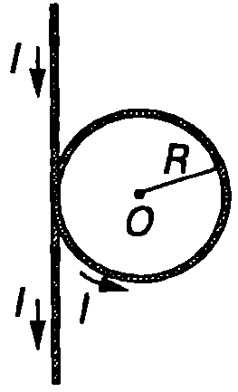
`Фиг. 65.13`
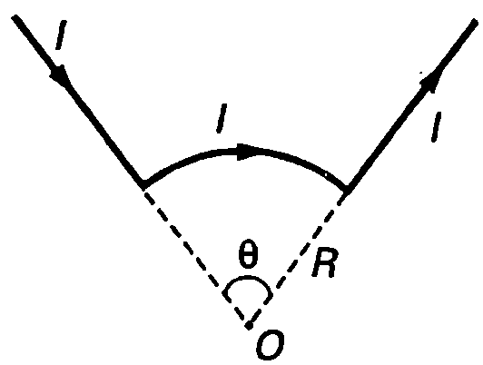
`Фиг. 65.14`
7. По дълъг цилиндричен проводник с радиус $R$ тече постоянен ток $I$, който е разпределен равномерно в напречното сечение на цилиндъра (плътността на тока е константа). Определете индукцията на магнитното поле на тока на разстояние $a$ от оста на цилиндъра. Разгледайте два случая:
а) $a > R$; б) $a < R$.
Указание. Полето има осева симетрия: индукционните линии са концентрични окръжности, чиито центрове лежат на оста на цилиндъра. За амперови контури изберете две индукционни линии с радиуси $a_1 > R$ и $a_2 < R$. Отчетете, че само част от тока пресича повърхността, ограничена от контура с радиус $a_2$.